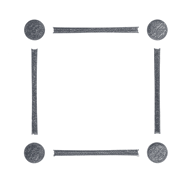
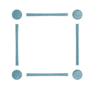

SYMBOL · FLOATING — 4-dot square (corner-dot float)
隅 4 点が辺の線分に触れない「浮いた」構成。logo-regenerate-brief §2.1 で定義された rev.5 公式バリアント。「点と線がまだ繋がっていない」TENZU の物語を Symbol レベルで表現する。

ink on white
ink on cream
on dot grid

cream on fg

white on fg
white on accent

teal on white
teal on cream
spacer